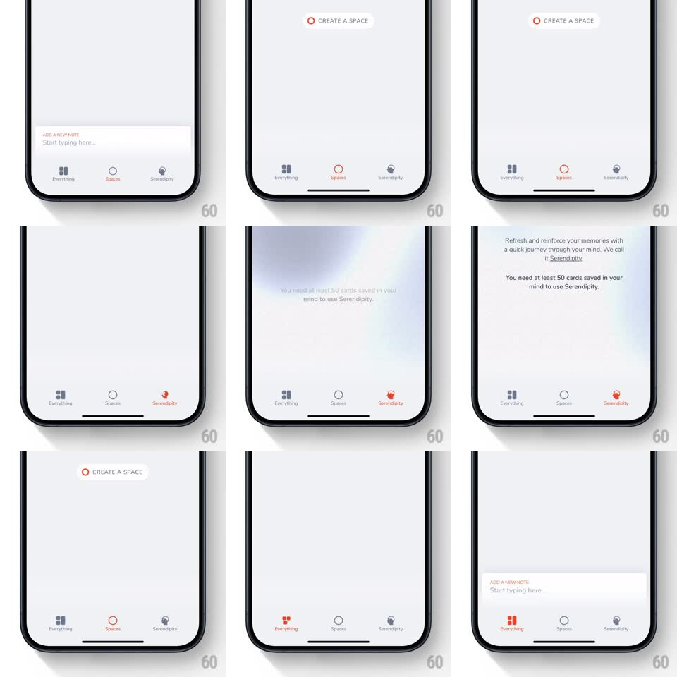

Media
Frame-by-frame

Rebuild this interaction 1:1: mymind's tab bar icons - selecting a tab morphs and recolors its icon: the grid fills in, a circle becomes a loading spinner then a ring, and a lamp shape pops into a map-pin, each animating while tinting coral.

Rebuild this interaction 1:1: mymind's tab bar icons - selecting a tab morphs and recolors its icon: the grid fills in, a circle becomes a loading spinner then a ring, and a lamp shape pops into a map-pin, each animating while tinting coral. ## Integration Integration: stack-agnostic spec - springs given as stiffness/damping, timed motions as duration + curve; map every value to your framework and animation library of choice. ## Scene Light screens with a 3-icon bottom tab bar: Everything (2x2 grid glyph), Spaces (circle glyph), Serendipity (lamp glyph). Inactive tabs are gray outlines; the active tab tints coral and its label stays small and gray-to-coral. ## Motion spec Pattern: morphing tab icons on selection. - Tap a tab: its icon tint sweeps gray -> coral (200ms) while the glyph animates its signature morph (~350ms): the grid cells pop in one-by-one (stagger 40ms), the circle strokes around (trim path 0 -> 1) resolving into a filled ring, the lamp tilts and pops into a pin with a small bounce (scale 0.85 -> 1, spring ~420/18). - Deselecting reverses: the icon relaxes back to its outline state (250ms) as it returns to gray. - Selection also springs the icon's scale (1 -> 0.9 -> 1, spring ~500/20) with a light haptic tap. - The tab content swaps underneath with a soft crossfade (200ms) - the icon show is the star. ## Calibration - Every icon has its own morph personality; none simply swap color. - The home indicator area stays clear; the bar is a floating white strip with soft shadow. ## Reduced motion Icons tint and crossfade without morphs. ## Don't miss - The Spaces circle plays a spinner arc before settling into its ring - it reads as "loading a space." - Labels are tiny caps under each glyph; only the active label is coral.